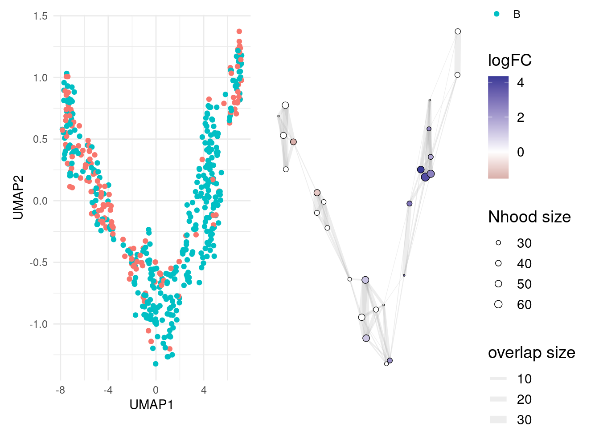

Last updated: 2025-01-10
Checks: 7 0
Knit directory: muse/
This reproducible R Markdown analysis was created with workflowr (version 1.7.1). The Checks tab describes the reproducibility checks that were applied when the results were created. The Past versions tab lists the development history.
Great! Since the R Markdown file has been committed to the Git repository, you know the exact version of the code that produced these results.
Great job! The global environment was empty. Objects defined in the global environment can affect the analysis in your R Markdown file in unknown ways. For reproduciblity it’s best to always run the code in an empty environment.
The command set.seed(20200712) was run prior to running
the code in the R Markdown file. Setting a seed ensures that any results
that rely on randomness, e.g. subsampling or permutations, are
reproducible.
Great job! Recording the operating system, R version, and package versions is critical for reproducibility.
Nice! There were no cached chunks for this analysis, so you can be confident that you successfully produced the results during this run.
Great job! Using relative paths to the files within your workflowr project makes it easier to run your code on other machines.
Great! You are using Git for version control. Tracking code development and connecting the code version to the results is critical for reproducibility.
The results in this page were generated with repository version 2dd7fac. See the Past versions tab to see a history of the changes made to the R Markdown and HTML files.
Note that you need to be careful to ensure that all relevant files for
the analysis have been committed to Git prior to generating the results
(you can use wflow_publish or
wflow_git_commit). workflowr only checks the R Markdown
file, but you know if there are other scripts or data files that it
depends on. Below is the status of the Git repository when the results
were generated:
Ignored files:
Ignored: .Rhistory
Ignored: .Rproj.user/
Ignored: data/pbmc3k.csv
Ignored: data/pbmc3k.csv.gz
Ignored: data/pbmc3k/
Ignored: r_packages_4.4.0/
Ignored: r_packages_4.4.1/
Note that any generated files, e.g. HTML, png, CSS, etc., are not included in this status report because it is ok for generated content to have uncommitted changes.
These are the previous versions of the repository in which changes were
made to the R Markdown (analysis/miloR.Rmd) and HTML
(docs/miloR.html) files. If you’ve configured a remote Git
repository (see ?wflow_git_remote), click on the hyperlinks
in the table below to view the files as they were in that past version.
| File | Version | Author | Date | Message |
|---|---|---|---|---|
| Rmd | 2dd7fac | Dave Tang | 2025-01-10 | DA testing with miloR |
Milo is a tool for analysis of complex single cell datasets generated from replicated multi-condition experiments, which detects changes in composition between conditions. While differential abundance (DA) is commonly quantified in discrete cell clusters, Milo uses partially overlapping neighbourhoods of cells on a KNN graph. Starting from a graph that faithfully recapitulates the biology of the cell population, Milo analysis consists of 3 steps:
Sampling of representative neighbourhoods Testing for differential abundance of conditions in all neighbourhoods Accounting for multiple hypothesis testing using a weighted FDR procedure that accounts for the overlap of neighbourhoods
Install Bioconductor packages using
BiocManager::install().
if (!require("BiocManager", quietly = TRUE))
install.packages("BiocManager")
BiocManager::install("SingleCellExperiment")
BiocManager::install("scran")
BiocManager::install("scater")
BiocManager::install("miloR")
install.packages('dplyr')
install.packages('patchwork')Load libraries.
library(miloR)Loading required package: edgeRLoading required package: limmalibrary(SingleCellExperiment)Loading required package: SummarizedExperimentLoading required package: MatrixGenericsLoading required package: matrixStats
Attaching package: 'matrixStats'The following object is masked from 'package:dplyr':
count
Attaching package: 'MatrixGenerics'The following objects are masked from 'package:matrixStats':
colAlls, colAnyNAs, colAnys, colAvgsPerRowSet, colCollapse,
colCounts, colCummaxs, colCummins, colCumprods, colCumsums,
colDiffs, colIQRDiffs, colIQRs, colLogSumExps, colMadDiffs,
colMads, colMaxs, colMeans2, colMedians, colMins, colOrderStats,
colProds, colQuantiles, colRanges, colRanks, colSdDiffs, colSds,
colSums2, colTabulates, colVarDiffs, colVars, colWeightedMads,
colWeightedMeans, colWeightedMedians, colWeightedSds,
colWeightedVars, rowAlls, rowAnyNAs, rowAnys, rowAvgsPerColSet,
rowCollapse, rowCounts, rowCummaxs, rowCummins, rowCumprods,
rowCumsums, rowDiffs, rowIQRDiffs, rowIQRs, rowLogSumExps,
rowMadDiffs, rowMads, rowMaxs, rowMeans2, rowMedians, rowMins,
rowOrderStats, rowProds, rowQuantiles, rowRanges, rowRanks,
rowSdDiffs, rowSds, rowSums2, rowTabulates, rowVarDiffs, rowVars,
rowWeightedMads, rowWeightedMeans, rowWeightedMedians,
rowWeightedSds, rowWeightedVarsLoading required package: GenomicRangesLoading required package: stats4Loading required package: BiocGenerics
Attaching package: 'BiocGenerics'The following object is masked from 'package:limma':
plotMAThe following objects are masked from 'package:lubridate':
intersect, setdiff, unionThe following objects are masked from 'package:dplyr':
combine, intersect, setdiff, unionThe following objects are masked from 'package:stats':
IQR, mad, sd, var, xtabsThe following objects are masked from 'package:base':
anyDuplicated, aperm, append, as.data.frame, basename, cbind,
colnames, dirname, do.call, duplicated, eval, evalq, Filter, Find,
get, grep, grepl, intersect, is.unsorted, lapply, Map, mapply,
match, mget, order, paste, pmax, pmax.int, pmin, pmin.int,
Position, rank, rbind, Reduce, rownames, sapply, saveRDS, setdiff,
table, tapply, union, unique, unsplit, which.max, which.minLoading required package: S4Vectors
Attaching package: 'S4Vectors'The following objects are masked from 'package:lubridate':
second, second<-The following objects are masked from 'package:dplyr':
first, renameThe following object is masked from 'package:tidyr':
expandThe following object is masked from 'package:utils':
findMatchesThe following objects are masked from 'package:base':
expand.grid, I, unnameLoading required package: IRanges
Attaching package: 'IRanges'The following object is masked from 'package:lubridate':
%within%The following objects are masked from 'package:dplyr':
collapse, desc, sliceThe following object is masked from 'package:purrr':
reduceLoading required package: GenomeInfoDbLoading required package: BiobaseWelcome to Bioconductor
Vignettes contain introductory material; view with
'browseVignettes()'. To cite Bioconductor, see
'citation("Biobase")', and for packages 'citation("pkgname")'.
Attaching package: 'Biobase'The following object is masked from 'package:MatrixGenerics':
rowMediansThe following objects are masked from 'package:matrixStats':
anyMissing, rowMedians
Attaching package: 'SingleCellExperiment'The following object is masked from 'package:edgeR':
cpmlibrary(scater)Loading required package: scuttle
Attaching package: 'scater'The following object is masked from 'package:limma':
plotMDSlibrary(scran)
library(dplyr)
library(patchwork)Load testing data.
data("sim_trajectory", package = "miloR")
## Extract SingleCellExperiment object
traj_sce <- sim_trajectory[['SCE']]
## Extract sample metadata to use for testing
traj_meta <- sim_trajectory[["meta"]]
## Add metadata to colData slot
colData(traj_sce) <- DataFrame(traj_meta)
colnames(traj_sce) <- colData(traj_sce)$cell_id
redim <- reducedDim(traj_sce, "PCA")
dimnames(redim) <- list(colnames(traj_sce), paste0("PC", c(1:50)))
reducedDim(traj_sce, "PCA") <- redim logcounts(traj_sce) <- log(counts(traj_sce) + 1)
traj_sce <- runPCA(traj_sce, ncomponents=30)
traj_sce <- runUMAP(traj_sce)
plotUMAP(traj_sce)traj_milo <- Milo(traj_sce)
reducedDim(traj_milo, "UMAP") <- reducedDim(traj_sce, "UMAP")
traj_miloclass: Milo
dim: 500 500
metadata(0):
assays(2): counts logcounts
rownames(500): G1 G2 ... G499 G500
rowData names(0):
colnames(500): C1 C2 ... C499 C500
colData names(5): cell_id group_id Condition Replicate Sample
reducedDimNames(2): PCA UMAP
mainExpName: NULL
altExpNames(0):
nhoods dimensions(2): 1 1
nhoodCounts dimensions(2): 1 1
nhoodDistances dimension(1): 0
graph names(0):
nhoodIndex names(1): 0
nhoodExpression dimension(2): 1 1
nhoodReducedDim names(0):
nhoodGraph names(0):
nhoodAdjacency dimension(2): 1 1traj_milo <- buildGraph(traj_milo, k = 10, d = 30)Constructing kNN graph with k:10traj_milo <- makeNhoods(traj_milo, prop = 0.1, k = 10, d=30, refined = TRUE)Checking valid objectRunning refined sampling with reduced_dimplotNhoodSizeHist(traj_milo)traj_milo <- countCells(traj_milo, meta.data = data.frame(colData(traj_milo)), samples="Sample")Checking meta.data validityCounting cells in neighbourhoodshead(nhoodCounts(traj_milo))6 x 6 sparse Matrix of class "dgCMatrix"
B_R1 A_R1 A_R2 B_R2 B_R3 A_R3
1 13 2 1 19 21 1
2 8 5 3 4 5 8
3 12 1 1 9 12 .
4 9 3 3 11 11 8
5 8 . . 14 28 1
6 9 6 7 7 6 10traj_design <- data.frame(colData(traj_milo))[,c("Sample", "Condition")]
traj_design <- distinct(traj_design)
rownames(traj_design) <- traj_design$Sample
## Reorder rownames to match columns of nhoodCounts(milo)
traj_design <- traj_design[colnames(nhoodCounts(traj_milo)), , drop=FALSE]
traj_design Sample Condition
B_R1 B_R1 B
A_R1 A_R1 A
A_R2 A_R2 A
B_R2 B_R2 B
B_R3 B_R3 B
A_R3 A_R3 Atraj_milo <- calcNhoodDistance(traj_milo, d=30)'as(<dgTMatrix>, "dgCMatrix")' is deprecated.
Use 'as(., "CsparseMatrix")' instead.
See help("Deprecated") and help("Matrix-deprecated").da_results <- testNhoods(traj_milo, design = ~ Condition, design.df = traj_design)Using TMM normalisationRunning with model contrastsPerforming spatial FDR correction with k-distance weightingda_results %>%
dplyr::arrange(SpatialFDR) %>%
head() logFC logCPM F PValue FDR Nhood SpatialFDR
12 3.780446 16.31466 29.17226 3.761988e-07 1.053357e-05 12 1.025632e-05
5 4.238085 15.97004 25.42427 1.786476e-06 2.501067e-05 5 2.450793e-05
21 3.100395 15.77424 32.86600 9.631834e-06 8.989712e-05 21 8.890275e-05
1 2.545269 16.10138 16.53118 8.925256e-05 6.247679e-04 1 6.193743e-04
3 2.791546 15.54753 19.27492 1.518024e-04 8.500936e-04 3 8.447641e-04
17 -1.640569 15.74817 22.08324 2.019242e-04 9.423129e-04 17 9.412823e-04traj_milo <- buildNhoodGraph(traj_milo)
plotUMAP(traj_milo) + plotNhoodGraphDA(traj_milo, da_results, alpha=0.05) +
plot_layout(guides="collect")Adding nhood effect sizes to neighbourhood graph attributes
sessionInfo()R version 4.4.1 (2024-06-14)
Platform: x86_64-pc-linux-gnu
Running under: Ubuntu 22.04.5 LTS
Matrix products: default
BLAS: /usr/lib/x86_64-linux-gnu/openblas-pthread/libblas.so.3
LAPACK: /usr/lib/x86_64-linux-gnu/openblas-pthread/libopenblasp-r0.3.20.so; LAPACK version 3.10.0
locale:
[1] LC_CTYPE=en_US.UTF-8 LC_NUMERIC=C
[3] LC_TIME=en_US.UTF-8 LC_COLLATE=en_US.UTF-8
[5] LC_MONETARY=en_US.UTF-8 LC_MESSAGES=en_US.UTF-8
[7] LC_PAPER=en_US.UTF-8 LC_NAME=C
[9] LC_ADDRESS=C LC_TELEPHONE=C
[11] LC_MEASUREMENT=en_US.UTF-8 LC_IDENTIFICATION=C
time zone: Etc/UTC
tzcode source: system (glibc)
attached base packages:
[1] stats4 stats graphics grDevices utils datasets methods
[8] base
other attached packages:
[1] patchwork_1.3.0 scran_1.34.0
[3] scater_1.34.0 scuttle_1.16.0
[5] SingleCellExperiment_1.28.1 SummarizedExperiment_1.36.0
[7] Biobase_2.66.0 GenomicRanges_1.58.0
[9] GenomeInfoDb_1.42.1 IRanges_2.40.1
[11] S4Vectors_0.44.0 BiocGenerics_0.52.0
[13] MatrixGenerics_1.18.0 matrixStats_1.4.1
[15] miloR_2.2.0 edgeR_4.4.1
[17] limma_3.62.1 lubridate_1.9.3
[19] forcats_1.0.0 stringr_1.5.1
[21] dplyr_1.1.4 purrr_1.0.2
[23] readr_2.1.5 tidyr_1.3.1
[25] tibble_3.2.1 ggplot2_3.5.1
[27] tidyverse_2.0.0 workflowr_1.7.1
loaded via a namespace (and not attached):
[1] RColorBrewer_1.1-3 rstudioapi_0.17.1 jsonlite_1.8.9
[4] magrittr_2.0.3 ggbeeswarm_0.7.2 farver_2.1.2
[7] rmarkdown_2.28 fs_1.6.4 zlibbioc_1.52.0
[10] vctrs_0.6.5 memoise_2.0.1 htmltools_0.5.8.1
[13] S4Arrays_1.6.0 BiocNeighbors_2.0.1 SparseArray_1.6.0
[16] sass_0.4.9 pracma_2.4.4 bslib_0.8.0
[19] cachem_1.1.0 whisker_0.4.1 igraph_2.1.2
[22] lifecycle_1.0.4 pkgconfig_2.0.3 rsvd_1.0.5
[25] Matrix_1.7-0 R6_2.5.1 fastmap_1.2.0
[28] GenomeInfoDbData_1.2.13 digest_0.6.37 numDeriv_2016.8-1.1
[31] colorspace_2.1-1 ps_1.8.1 rprojroot_2.0.4
[34] dqrng_0.4.1 irlba_2.3.5.1 beachmat_2.22.0
[37] labeling_0.4.3 fansi_1.0.6 timechange_0.3.0
[40] httr_1.4.7 polyclip_1.10-7 abind_1.4-8
[43] compiler_4.4.1 withr_3.0.2 BiocParallel_1.40.0
[46] viridis_0.6.5 highr_0.11 ggforce_0.4.2
[49] MASS_7.3-60.2 DelayedArray_0.32.0 bluster_1.16.0
[52] gtools_3.9.5 tools_4.4.1 vipor_0.4.7
[55] beeswarm_0.4.0 httpuv_1.6.15 glue_1.8.0
[58] callr_3.7.6 promises_1.3.0 grid_4.4.1
[61] getPass_0.2-4 cluster_2.1.6 generics_0.1.3
[64] gtable_0.3.6 tzdb_0.4.0 hms_1.1.3
[67] metapod_1.14.0 BiocSingular_1.22.0 tidygraph_1.3.1
[70] ScaledMatrix_1.14.0 utf8_1.2.4 XVector_0.46.0
[73] ggrepel_0.9.6 pillar_1.9.0 later_1.3.2
[76] splines_4.4.1 tweenr_2.0.3 lattice_0.22-6
[79] FNN_1.1.4.1 tidyselect_1.2.1 locfit_1.5-9.10
[82] knitr_1.48 git2r_0.35.0 gridExtra_2.3
[85] xfun_0.48 graphlayouts_1.2.0 statmod_1.5.0
[88] stringi_1.8.4 UCSC.utils_1.2.0 yaml_2.3.10
[91] evaluate_1.0.1 codetools_0.2-20 ggraph_2.2.1
[94] cli_3.6.3 uwot_0.2.2 munsell_0.5.1
[97] processx_3.8.4 jquerylib_0.1.4 Rcpp_1.0.13
[100] parallel_4.4.1 viridisLite_0.4.2 scales_1.3.0
[103] crayon_1.5.3 rlang_1.1.4 cowplot_1.1.3